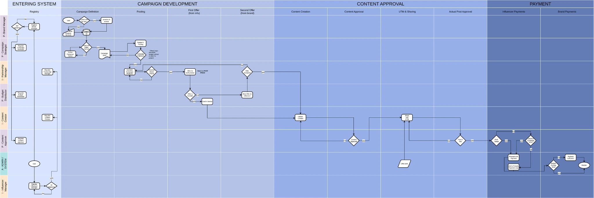

02 / Case study · Zero-to-one product
AdSphere.
From a fragmented industry process to a structured product.
What began as a database exercise evolved into a product concept for coordinating influencer marketing campaigns — from finding partners and negotiating offers to content approval, attribution and payment logic.
One workflow. Different incentives. Shared rules.
4 products · 16 targets4 offers
4/8 agreements
3 pending
1/2 agreements
2/2 agreements
Development-stage interfaceCampaign offers grouped by product, with agreement progress and a counteroffer notification. Development-stage interface, not a final production release.
The problem
Influencer campaigns involve more than finding a creator.
Campaign coordination can span informal messages, spreadsheets, negotiations, creative reviews, publication checks and performance reporting. The challenge was to understand how these steps connect — and which rules would make the process more transparent for both sides.
- Messages
- Offers
- Approvals
- Reporting
- Shared stages
- Explicit decisions
- Traceable actions
- Defined responsibilities
Discovery & process mapping
We mapped the business before defining the screens.
We spent roughly a month researching campaign operations and discussing parts of the process with people familiar with the sector. The result was a multi-role workflow that helped us identify dependencies, handoffs and decision points.
Research artifact / End-to-end process
The diagram above is a redrawn reading of the team's original swimlane, which mapped every role, decision and handoff.

Product decision / Balanced control
Neither side should control everything.
A central design principle was to distribute control across the relationship: brands decide whom to invite; influencers decide which opportunities to pursue; brands propose compensation; influencers can respond within defined limits.
Brand selects the pool.
Influencers can choose opportunities from the campaigns made available to them.
One counteroffer.
A limited negotiation loop prevents open-ended back-and-forth.
Creator makes. Brand reviews.
Creative production and approval remain separate responsibilities.
Negotiation logic · a bounded loop
Compensation proposed per product
Accept, or respond within defined limits
A single round — no open-ended back-and-forth
Visible in the offer list
A business rule that matters
Fixed fee or commission.
Not both.
Each offer follows one compensation model: a fixed payment per deliverable or a sales-based commission. Making this choice explicit reduces ambiguity in the negotiation and downstream payment logic.
A fixed payment per deliverable
A sales-based commission
TikTok · videoagreement
Instagram · postagreement
Product-level offers make compensation choices and agreement states visible. Sample data.
Decision → interface
Rules become visible states.
The interface exposes the negotiation outcome and offer model rather than leaving decisions in disconnected messages.
Approval & verification
Approval is a sequence, not a single button.
The workflow distinguishes the draft a brand approves from the content that is actually published. Tracking links and publication verification connect the creative process to performance measurement and payment eligibility.
- 01Draft uploadInfluencer submits content
- 02Brand reviewApproval or limited revision
- 03TrackingUTM-linked publication
- 04Post checkPublished link verified
- 05Payment logicEligible payout calculated
A draft being approved is not the same as a post being verified.
Two-sided product experience
One system. Different jobs to be done.
Brands coordinate campaigns and review offers, while influencers discover opportunities and track agreements. These early interface examples illustrate how the roles translated into different navigation and workflows.
Notifications, deal states and earnings support ongoing collaboration.
Discovery gives influencers a way to explore available campaign opportunities.
These are development-stage screens, not final production UI.
Measurement & limitations
We designed for attribution — and stayed clear about what was tested.
The product concept connects campaign links and codes to influencer-level performance and ROI reporting. The thesis explored UTM and GA4-based attribution, but the available validation relied partly on test data. Real banking integrations and long-running commercial campaigns were outside the implemented scope.
Designed
Campaign performance views, conversion attribution, payout logic and role-based workflows.
Partially validated
Attribution under test conditions and core product flows.
Not claimed
Live banking, production-scale adoption or measured real-world ROI improvement.
08 / The product thinking
Structure makes a complex relationship understandable.
- Process research
- Multi-role workflow
- Explicit business rules
- Approval & attribution logic
AdSphere taught me that defining who can act, when, and under which conditions is as much a product decision as designing the interface.
What I learned
A workflow becomes a product when its decisions are made explicit.
Mapping the real process revealed where flexibility mattered, where constraints protected users, and where verification was necessary.